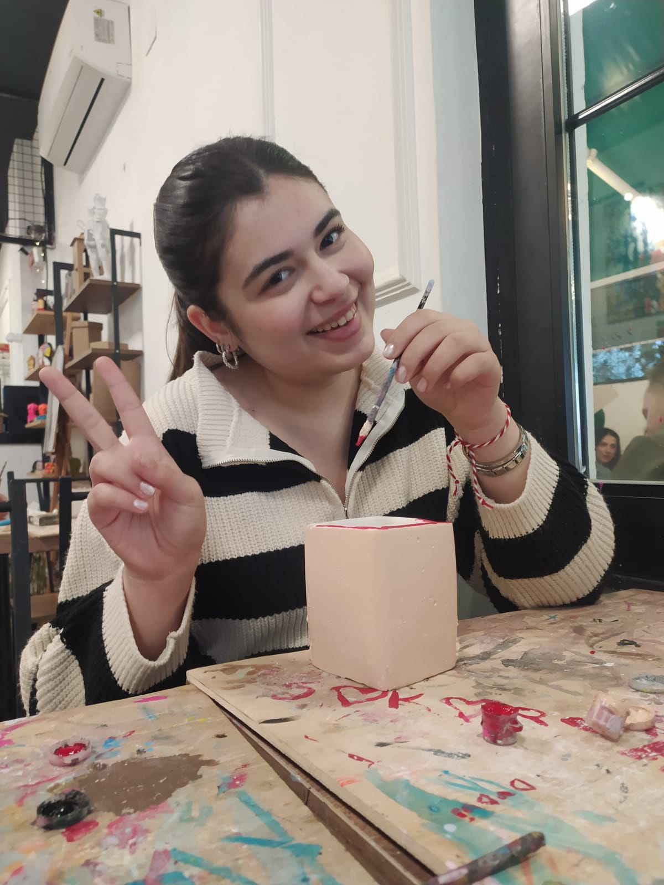

2024 - First Date 💫
Aslında seni daha önceden tanıyordum, ama o gün her şey değişti. Çünkü o andan itibaren tüm hayat planlarımda sen de vardın.
Seni şaşırtmak için seçtiğim mekanlar ve yaptığım kek sadece bir başlangıçtı...
O gün inatçı olduğunu anlamalıydım — seni arabadan zorla indirip kek yedirmeye çalıştığımı hatırlıyor musun? 😊
İşte o an, seninle geçireceğim harika bir hayatın ilk sahnesiydi.